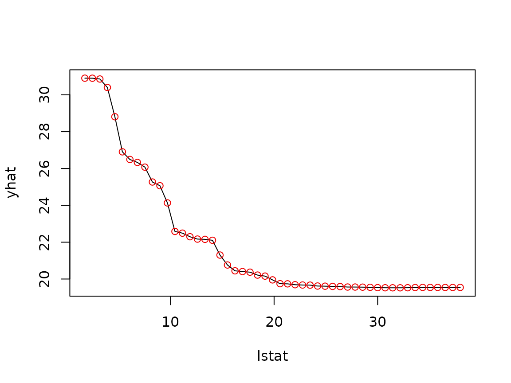
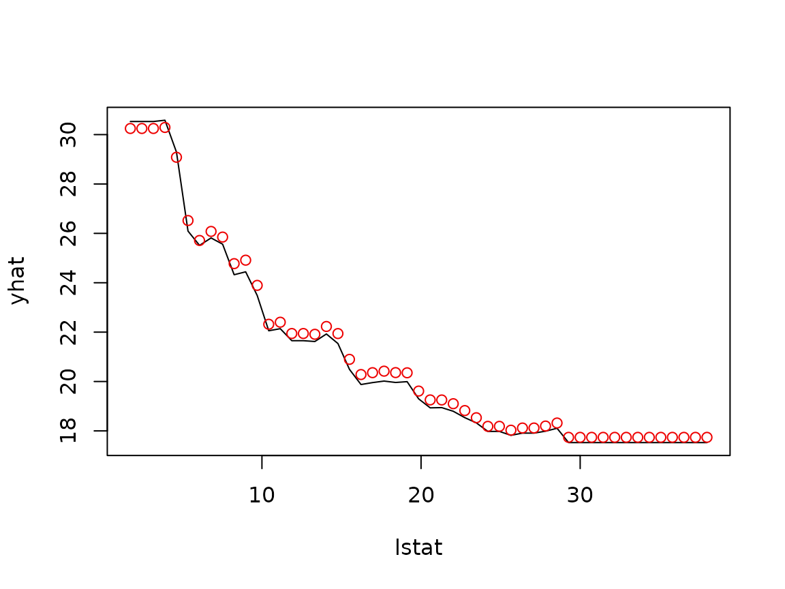

Computing partial dependence is embarrassingly simple but potentially expensive: for each point in the grid of predictor values, the model has to score a modified copy of the entire training set. This vignette covers the options pdp provides for speeding that up.
library(pdp)
library(randomForest)
data(boston)
set.seed(101)
boston.rf <- randomForest(cmedv ~ ., data = boston, ntree = 250)Batched predictions (batch.size)
By default, partial() calls predict() once
per grid point. Most predict() methods have non-trivial
per-call overhead, so it is often much faster to stack several
grid points together and score them in a single call. The
batch.size argument specifies the (approximate) maximum
number of rows to score per call:
system.time( # classic: one predict() call per grid point
pd1 <- partial(boston.rf, pred.var = "lstat", train = boston)
)
#> user system elapsed
#> 0.416 0.012 0.429
system.time( # batched: score up to one million rows per predict() call
pd2 <- partial(boston.rf, pred.var = "lstat", train = boston,
batch.size = 1e6)
)
#> user system elapsed
#> 0.177 0.000 0.177
identical(pd1, pd2)
#> [1] TRUEBatching only changes how the predictions are computed, not the result. To see this, plot the classic curve and overlay the batched results as points — they fall exactly on the curve:
plot(pd1) # classic (line)
tinyplot::tinyplot_add(yhat ~ lstat, data = pd2, type = "p", col = "red2")
The trade-off is memory: with batch.size = 1e6, up to a
million rows are held in memory at once. Pick a batch size that
comfortably fits your machine. Note that batch.size
requires the prediction function to return one prediction per row of
newdata, so it cannot be combined with a
pred.fun that aggregates its own predictions.
Parallel processing
partial() can compute the grid points (or batches) in
parallel via the foreach package.
Register a parallel backend (e.g., with doParallel) and
set parallel = TRUE:
library(doParallel)
cl <- makeCluster(4) # use 4 workers
registerDoParallel(cl)
pd <- partial(boston.rf, pred.var = c("lstat", "rm"), chull = TRUE,
train = boston, parallel = TRUE)
stopCluster(cl)If the model’s predict() method lives in a package, pass
it along via paropts (e.g.,
paropts = list(.packages = "ranger")) so the workers can
find it.
The recursive method for gbm
For gbm models, partial() defaults to
recursive = TRUE, which uses Friedman’s weighted tree
traversal method (implemented in C++) instead of the brute force
approach. It is much faster since it never has to touch the
training data:
library(gbm)
set.seed(103)
boston.gbm <- gbm(cmedv ~ ., data = boston, distribution = "gaussian",
n.trees = 500, interaction.depth = 3, shrinkage = 0.1)
system.time(
pd.recursive <- partial(boston.gbm, pred.var = "lstat", n.trees = 500,
train = boston) # recursive = TRUE is the default
)
#> user system elapsed
#> 0.003 0.000 0.002
system.time(
pd.brute <- partial(boston.gbm, pred.var = "lstat", n.trees = 500,
recursive = FALSE, train = boston, batch.size = 1e6)
)
#> user system elapsed
#> 0.307 0.000 0.307Overlaying the results shows that the two methods produce nearly the same curve:
plot(pd.recursive) # recursive (line)
tinyplot::tinyplot_add(yhat ~ lstat, data = pd.brute, type = "p", col = "red2")
The small differences are expected: rather than averaging predictions
over the training data, the recursive method weights each path through
the tree by the proportion of training observations that followed it,
which is not quite the same thing when the predictors are correlated (as
they are here). Note that the recursive method cannot be used with
ice = TRUE, pred.fun, or
inv.link.
Fast approximate PDPs (approx = TRUE)
Finally, approx = TRUE computes a much cheaper
approximation to partial dependence: rather than averaging over
the training data, predictions are computed for a single “exemplar”
observation (continuous predictors are fixed at their median;
categorical predictors at their most frequent value). This is in the
same spirit as the plotmo package and is most useful as
a quick first look at very large data sets:
partial(boston.rf, pred.var = "lstat", approx = TRUE, plot = TRUE,
train = boston)The underlying exemplar() function is also exported; you
can achieve the same thing (with more control) by passing an exemplar
record to train and, optionally, your own
pred.grid.